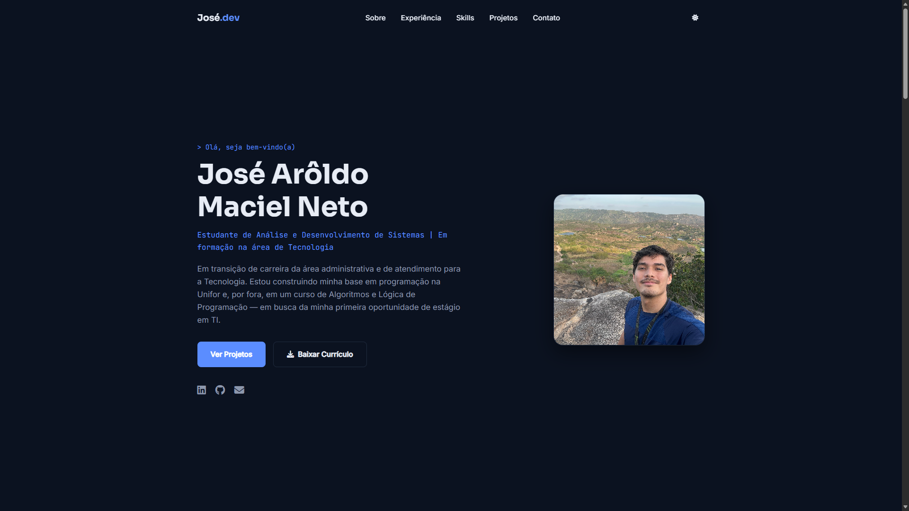

> Olá, seja bem-vindo(a)
Prazer, eu me chamo José Arôldo Maciel Neto
Estudante de Análise e Desenvolvimento de Sistemas | Em formação na área de Tecnologia
Em transição de carreira da área administrativa e de atendimento para a Tecnologia. Estou construindo minha base em programação na Unifor e, por fora, em um curso de Algoritmos e Lógica de Programação — em busca da minha primeira oportunidade de estágio em TI.
// sobre-mim
Quem eu sou
Sou José Arôldo Maciel Neto, cursando Tecnólogo em Análise e Desenvolvimento de Sistemas na Universidade de Fortaleza (Unifor), com previsão de conclusão em fevereiro de 2029. Antes de ingressar em ADS, construí experiência profissional nas áreas administrativa, comercial e de atendimento — e hoje estou em transição de carreira para a Tecnologia.
Estou no início da minha jornada em programação: por fora da faculdade, faço um curso de Algoritmos e Lógica de Programação para fortalecer minha base antes de avançar em linguagens e frameworks. Este portfólio também é meu principal projeto de estudo — estou aprendendo a entender e evoluir o código à medida que ele é construído.
No médio/longo prazo, tenho interesse em direcionar minha carreira para Dados, Inteligência Artificial e Ciência de Dados — mas meu foco agora é construir uma base sólida em programação e conquistar minha primeira oportunidade de estágio em TI.
sobre-mim.js
const estudante = {
nome: "José Arôldo Maciel Neto",
curso: "Tecnólogo em ADS",
instituicao: "Unifor",
periodo: "ago/2026 - fev/2029",
vindoDe: "Administrativo & Atendimento",
objetivoAtual: "Estágio em TI",
objetivoFuturo: "Dados / IA"
};// experiência
Experiência Profissional
Antes de migrar para Tecnologia, construí experiência nas áreas administrativa, comercial e de atendimento — uma base que hoje aplico também em projetos de tecnologia.
Dez/2025 – Jan/2026
Organização Administrativa
Escritório Fulgêncio Cruz Advocacia — Freelance
- Organização administrativa e documental
- Planilhas para controle de atendimentos, contratos e demandas
- Organização do Google Drive e estruturação de links de acesso aos documentos dos clientes
Jun/2025 – Out/2025
Bolsista (Bolsa Trabalho) → Assessor Especial de Gestão
Secretaria de Desenvolvimento Econômico
- Atividades administrativas e apoio às atividades da Secretaria
- Organização de informações e de demandas
Jul/2024 – Dez/2024
Atendimento Comercial Online
Escritório de Advocacia Cid Lira Braga — Estágio
- Atendimento de leads pelo WhatsApp e atendimento comercial
- Análise inicial das necessidades dos clientes e negociação
- Fechamento de contratos e organização de documentos e informações
- Inserção de dados em sistema e entrada de solicitações relacionadas a benefícios
// habilidades
O que eu sei (e o que estou aprendendo)
Venho de uma base administrativa e de atendimento, e agora estou construindo, do zero, minha base em tecnologia — por isso separei o que já domino do que ainda estou aprendendo.
Organização & Administração
Organização Administrativa
Organização de Documentos e Informações
Introdução à Administração
Estratégia de Negócios
Comunicação & Atendimento
Comunicação Interpessoal
Comunicação Empresarial
Atendimento ao Cliente
Gestão de Atendimento
Ferramentas
Word
Excel
Outlook
Teams
SharePoint
OneNote
OneDrive
Planner
Google Drive
Idiomas
Português — Nativo
Inglês — Básico
Em aprendizado — Tecnologia
Lógica de Programação
Algoritmos
HTML (iniciando)
CSS (básico)
JavaScript (em breve)
IA como Ferramenta de Produtividade
// projetos
Projetos
Esta seção vai crescer ao longo da minha graduação. Cada card abaixo segue o mesmo padrão — para adicionar um novo projeto no futuro, basta copiar um bloco "project-card" e trocar o conteúdo.

Próximo Projeto
Espaço reservado para o próximo projeto da graduação. Substitua por um projeto real assim que concluído.
Código em breve
Demo em breve
Próximo Projeto
Espaço reservado para o próximo projeto da graduação. Substitua por um projeto real assim que concluído.
Código em breve
Demo em breve
// contato
Vamos conversar?
Estou disponível para oportunidades de estágio em TI. Envie uma mensagem pelo formulário ou me encontre nas redes abaixo.
- josearoldomacielneto.19@gmail.com
- Itapajé, Ceará, Brasil
// feedback
Seu feedback é importante
Sugestões, elogios, críticas construtivas ou observações sobre a usabilidade e a acessibilidade deste portfólio são muito bem-vindas — ajudam a melhorar o projeto.